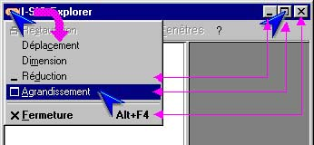
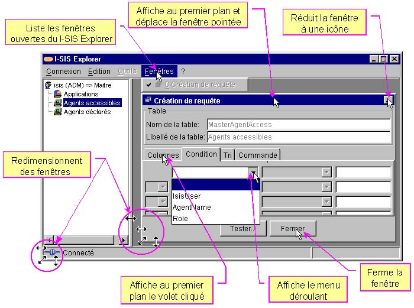

I-SIS Explorer

Guide d'utilisation
|
|
I-SIS Explorer |
|
|
Guide d'utilisation |
||
Cliquez l'icône du coin supérieur gauche pour afficher son menu déroulant. Toutes les actions de ce menu ne sont pas présentées ici. Elles fonctionnent cependant comme pour toute autre application (déplacement, dimension...),
Réduisez la fenêtre en cliquant sur son bouton ( sous Linux),

Agrandissez / restaurez la fenêtre en cliquant sur son bouton / ( / sous Linux),
Fermez la fenêtre en cliquant sur son bouton ( sous Linux).
Le I-SIS Explorer ouvre des vues, listées dans le menu "Fenêtres", menu depuis lequel vous affichez au premier plan celle de votre choix.
Elles se gèrent comme toute autre fenêtre, sauf sur deux points:
Disparition du bouton ( sous Linux),
Apparition d'un bouton "Fermer", centré en bas des fenêtres.

Copyright © 2003 BV Associates. Tous droits réservés.